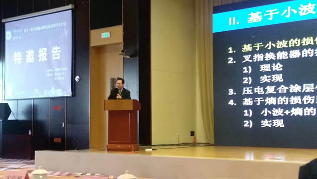
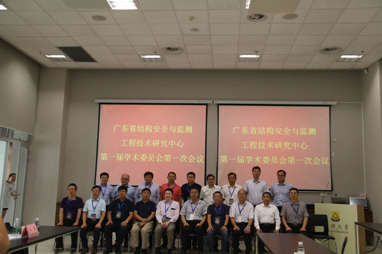
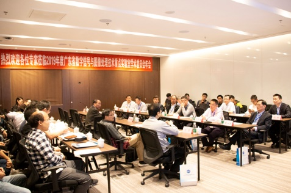

年度广东省数字信号与图像处理技术重点实验室年会在汕头大学成功召开
—— 2019.11.29

执行校长王泉院士带队参加第十三届全国振动理论及应用学术会议
—— 2019.11.11

2019年度广东省数字信号与图像处理技术重点实验室年会在汕头大学成功召开
—— 2019.11.29
—— 新闻 ——
29
2019.9
练江水体综合治理与生态修复关键技术集成及示范项目
广东省重点领域研发计划“练江水体综合治理与生态修复关键技术集成及示范项目”第一次会议在汕头大学召开。该项目是2019年度广东省 重点领域研发计划“污染防治与修复”重点专项项目的重中之重，总经费1000万…
17
2019.9
土木与环境工程系教师出席第十五届国际风工程会议
第十五届国际风工程会议(ICWE 15)于2019年9月1日至6日在北京市召开，会议由同济大学和北京交通大学主办，并得到了国家自然科学基金委、 中国土木工程学会、土木工程防灾国家重点实验室等单位的协助支…
17
2019.9
沈水龙院长为土木与环境工程系研究生新生上“开学第一课”
作为土木与环境工程系研究生新生入学活动的一部分，9月8日下午，汕头大学工学院院长沈水龙教授在G301教室作题为“改变思维，抓住今日”的主题讲座。讲座由工学院土木与环境工程系吴鸣副教授主持，工学院 土木与环境工程系系主任祝志文教授和58位土木与环境工程系硕士研究生新生参加了讲座…